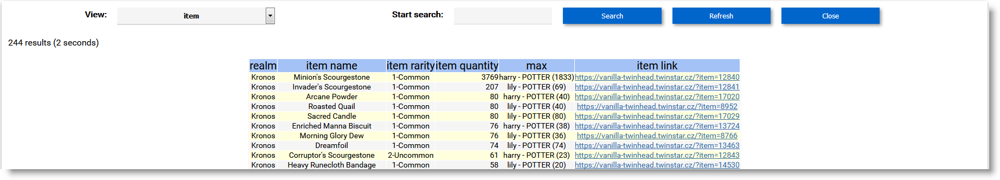

Tutorial 1: Viewing items in your web browser
Step 1
Install the Possessions addon into your World of Warcraft installation.
Step 2
The very first time you install the addon, log into all your characters and check your storage, so that all items in bags, bank and mail are scanned. Items are saved to data files on logging out.
After this first time, item information is updated incrementally. So, it is not necessary to check all your storage and relog every time, if you know nothing has changed on a character.
Step 3
Download, unzip and double-click on ledger_web.exe or start it from a Command Prompt from anywhere on your PC.
If no path argument is provided on the command line, the program will ask for a World of Warcraft folder before continuing, e.g. C:\Program Files\World of Warcraft 1.12.
Step 4
If a World of Warcraft folder containing Possessions addon data files is found then your default web browser should start with a new local web service.
From that point you can explore the Views of your item data, as well as search for items. Here is a sample from an Item View:
Note
If you type in a search term before pressing Enter or clicking on “Search” or changing the view, the results will appear much more quickly because it has to render less of the page (the slowest part).
You can sort with a single column by clicking on the column header name.